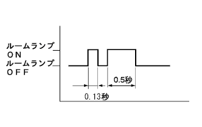
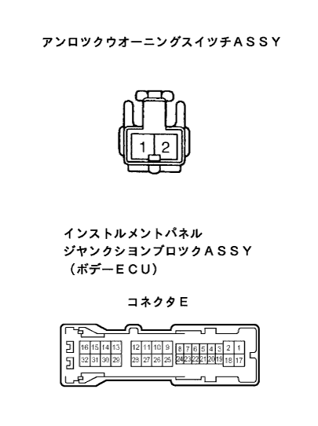

Wireless Door Tsuku Control System Wireless Function (Remote control) Not operate (prepare new or normal transmitters) [Car with smart door lock] |
| Step 1 | Basic function inspection |
Wireless basic function inspection (the point isreference)
|
| ||||
| NG | |
| Step 2 | Transmitter battery inspection |
When the transmitter tabutatsu is replaced with a new or normal product, and press the elevible key transmitter (smart portable machine), check if it is locked or unlocked.
When the door control tranz mitsu tabutatsu is replaced with a new or normal item, and press the door control transmitter three times, check whether the transmitter LED turns three times.
|
| ||||
| NG | |
| Step 3 | Self -diagnosis mode input |
After inserting the key plate into the ignitsu sijon tsugurazu -tsukushinda, insert the key plate again within 5 seconds, and perform the ON ← → LOCK operation once.
After Ignitsushi -sijon -twit off, we will perform the ← → LOCK operation of Ignitsushi -si On ← → LOCK in 9 times within 30 seconds.
|  |
Confirm that the room lamp (dome lamp or key lighting) flashes that it has shifted to self -diagnostic mode.
|
| ||||
| OK | |
| Step 4 | Confirmation by self -diagnosis mode |
Inspect the diag output when you continue to press the lock unlocksches of the electrical key transformer (smart portable machine).
|
| ||||
|
| ||||
| B | |
| Step 5 | Identification code registration |
Re -registration in transmitsuta additional mode.
|
| ||||
| OK | ||
| ||
| Step 6 | Smart key computer ASSY response inspection |
When you continue to press the elevision recovery key transformer (smart portable machine) or the door control transmitter (integrated key) of the new or normal product of the same type of car, check if you want to output an identification code mismatch.
|
| ||||
| NG | |
| Step 7 | Door Control Computer Assy (Recever Tsuki) Inspection |
Voltage inspection
 |
Use SST (Toyota Electrical Tester) to check the voltage between the vehicle side wire harness connector ← → body ground.
| Terminal number | item | Measurement conditions | standard |
|---|---|---|---|
| 5 (RCO) ← → Body Earth | Voltage | Always | About 5V |
|
| ||||
| NG | |
| Step 8 | Wire harness inspection |
Conduction inspection
Separate the connector of the door control compilation with a recever and a smart key compuitor ASSY.
 |
Use SST (Toyota Electrical Tester) to inspect the conversation between the connectors of each terminal of the wire harness on the vehicle side of the wire harness of the vehicle side of the door control compilation with with recever.
| Terminal number (Receiver ← → Smart ECU) | item | Measurement conditions | standard |
|---|---|---|---|
| 3 (RSSI) ← → 14 (RSSI) | Conduction | Always | There is an conductor |
| 4 (data) ← → 13 (RDA) | Conduction | Always | There is an conductor |
| 5 (RCO) ← → 16 (RCO) | Conduction | Always | There is an conductor |
| 2 (GND) ← → Body Earth | Conduction | Always | There is an conductor |
Short -circuit inspection
Use SST (Toyota Electrical Tester) to inspect the conductor between each vehicle connector ← → body ground.
| Terminal number | item | Measurement conditions | standard |
|---|---|---|---|
| 14 (RSSI) ← → Body Earth | Conduction | Always | Without conduction |
| 13 (RDA) ← → Body Earth | Conduction | Always | Without conduction |
| 16 (RCO) ← → Body Earth | Conduction | Always | Without conduction |
| Terminal number | item | Measurement conditions | standard |
|---|---|---|---|
| 3 (RSSI) ← → Body Earth | Conduction | Always | Without conduction |
| 4 (Data) ← → Body Earth | Conduction | Always | Without conduction |
| 5 (RCO) ← → Body Earth | Conduction | Always | Without conduction |
|
| ||||
| OK | |
| Step 9 | Wire harness inspection |
Conduction inspection
Separate the connector T of the smart key compiyor ASSY and the body ECU.
Use SST (Toyota Electrical Tester) to check the conversation between each terminal of the wire harness side of the vehicle side of the smart key compiyuta ASSY ← → the body side of the body wire harness on each terminal.
| Terminal number (Smart ECU ← → Body ECU) | item | Measurement conditions | standard |
|---|---|---|---|
| 15 (RDA3) ← → T7 (RDA) | Conduction | Always | There is an conductor |
| 4 (PRG) ← → T6 (PRG) | Conduction | Always | There is an conductor |
Short -circuit inspection
Use SST (Toyota Electrical Tester) to inspect the conductor between each vehicle connector ← → body ground.
| Terminal number | item | Measurement conditions | standard |
|---|---|---|---|
| 15 (RDA3) ← → Body Earth | Conduction | Always | Without conduction |
| 4 (PRG) ← → Body Earth | Conduction | Always | Without conduction |
| Terminal number | item | Measurement conditions | standard |
|---|---|---|---|
| T7 (RDA) ← → Body Earth | Conduction | Always | Without conduction |
| T6 (PRG) ← → Body Earth | Conduction | Always | Without conduction |
|
| ||||
| OK | |
| Step 10 | Replaced with normal door control compilation Utahizesiba |
Exchange with normal door control compilation with with recever, and register the identification code of the electrical key transmitter and door control transmitter (key).
|
| ||||
| NG | |
| Step 11 | Replaced with normal smart key compilation with ASSY |
Exchange with normal smart key compovenota ASSY, and register an identification code for the electrical key transmitter and the door control transmitter (key).
|
| ||||
| OK | ||
| ||
| Step 12 | Self -diagnostic mode input method confirmation |
|
| ||||
| A | |
| Step 13 | Unlock warning switch Assy Single Inspection |
Conduction inspection
 |
Use SST (Toyota Electrical Tester) to inspect the conductor 1 terminal ← → 2 terminals.
| conditions | standard |
|---|---|
| When the pin is pushed in | There is an conductor |
| When the pin is not pushed in | Without conduction |
|
| ||||
| OK | |
| Procedure 14 | Wire harness inspection |
Wire harness conduction inspection
Separate the connector E of the unlock warning suits and the body ECU.
|  |
Use SST (Toyota Electrical Tester) to inspect the conjunction between the vehicle connector of the unlockwearing suits and the vehicle connector of the body ECU and the body ground.
| Terminal number (Suitsu ← → Body ECU) | item | Measurement conditions | standard |
|---|---|---|---|
| 2 ← → E26 ((KSW) | Conduction | Always | There is an conductor |
| 1 ← → Body Earth | Conduction | Always | There is an conductor |
|
| ||||
| OK | ||
| ||